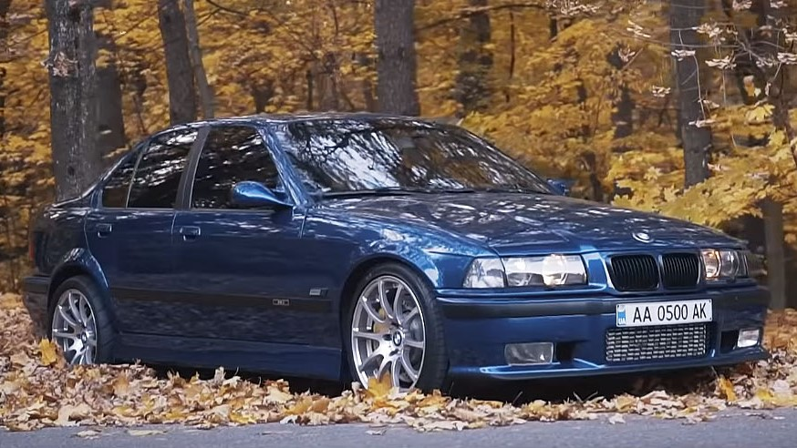
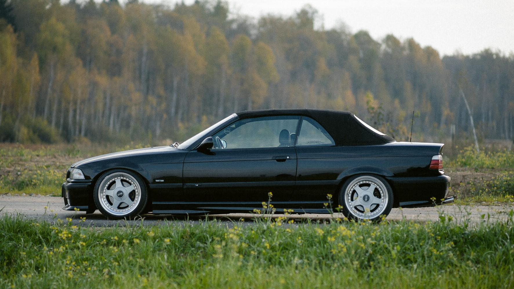
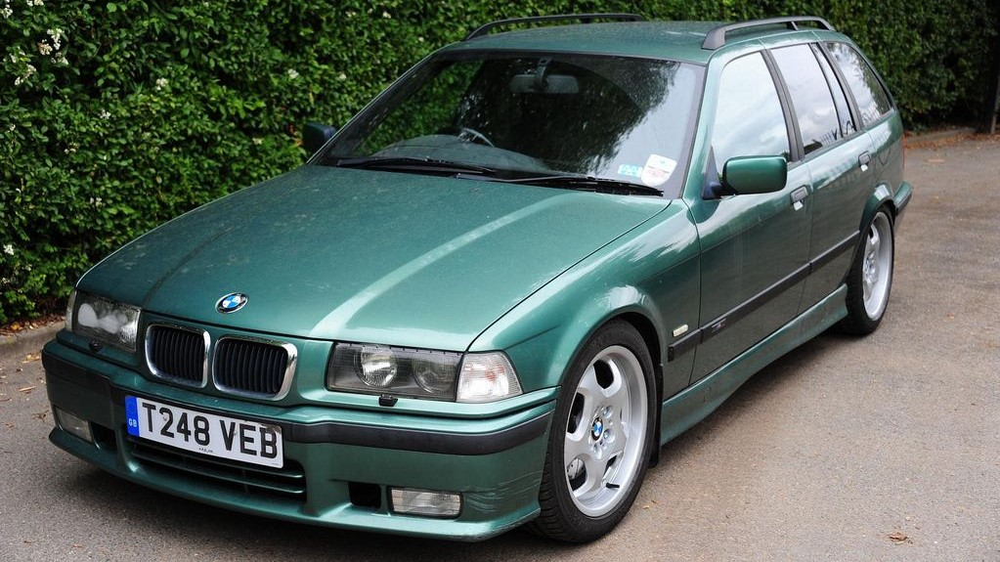
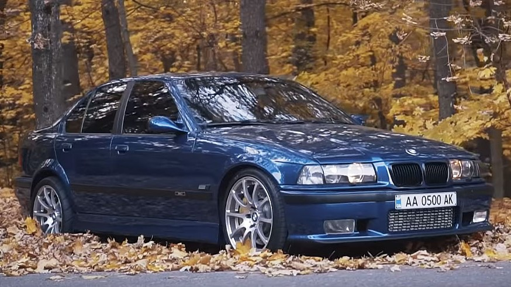
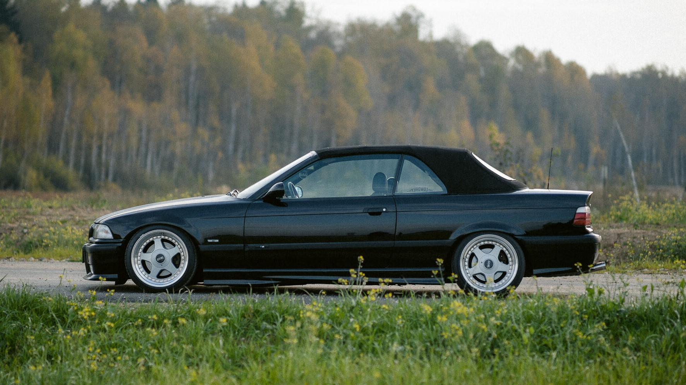
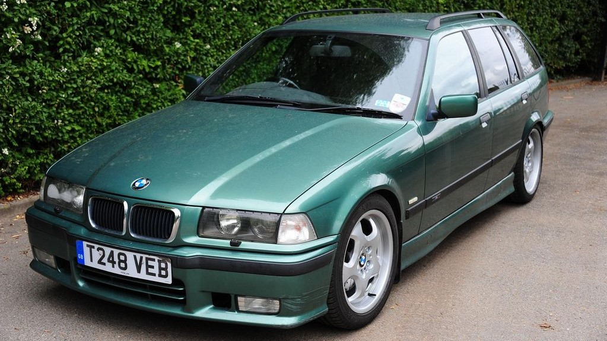

Выпуск четырёхдверных седанов начался в конце 1990 года. В 1992 году началось производство двухдверных купе , а в 1993 году появились открытые кабриолеты. Укороченная версия автомобиля с трёхдверным, с большой задней дверью, кузовом хэтчбек появилась в конце 1993 года, а вместительный универсал стали выпускать, начиная с 1995 года. Спортивная версия M3 появилась в 1992 году, сначала в виде купе. В 1994 году к нему присоединились модели с кузовами кабриолет и седан. Всего было изготовлено 2 745 780 автомобилей третьего поколения.